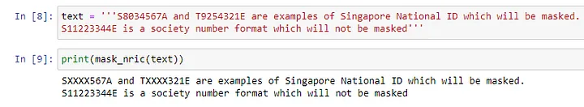
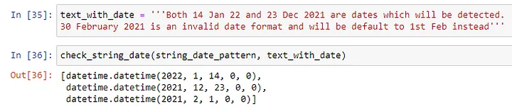
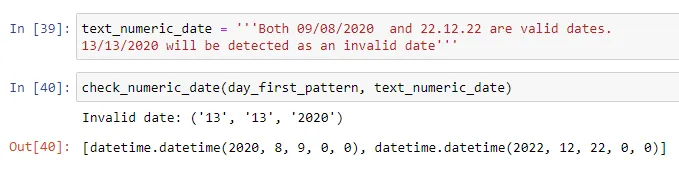
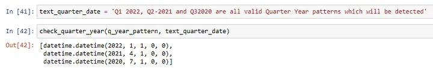

Applications of Regex and Python in data transformation for masking of sensitive information and extraction of date details from free text
Introduction
There are many useful applications of Regex. In this article, I would like to cover two of them commonly used for my projects in Singapore. They are
- Masking of sensitive Singapore National ID information
- Extraction of relevant date details from a text field
The full set of codes in a Jupyter Notebook format can be found in the following link https://github.com/ZS-Weng/Data_Engineering/tree/main/Regex
The full code for the various functions can also be found at the end of the article.
1. Masking of Singapore National ID information
In Singapore, the National ID starts with one of the alphabets, S,T,F or G followed by 7 digits and ends with another alphabet e.g. S1234567A. With a simple Regex function, we can detect the occurrence of text matching the pattern and mask the information automatically to a format such as SXXXX567A.
import re
def mask_nric(text):
nric_regex = re.compile('([STFG])\d{4}(\d{3}[A-Z])')
return nric_regex.sub(r'\1XXXX\2', text)Below is the example of the original text and processed text where the sensitive information have been masked:

2. Extraction of date details from Service Text Field
There are several formats which can represent date and time and I will be highlighting the common scenarios for date representation. The code can be customized to the different date formats accordingly.
2a. Extraction of date details where month is represented by abbreviated or long month name
In this section, the date pattern to be extracted is where the month is an abbreviated or full month name e.g. 22 Dec 2021, 18 October 22 etc. The Regex Pattern for matching the date and output with some additional processing are shown below.
string_date_pattern = re.compile(r'''(\d{1,2})?[\s-]?((?:(?:Jan(?:uary)?|Feb(?:ruary)?|Mar(?:ch)?|Apr(?:il)?|May|Jun(?:e)?|Jul(?:y)?|Aug(?:ust)?|Sep(?:tember)?|Oct(?:ober)?|Nov(?:ember)?|Dec(?:ember)?)))[\w]?['\s-]?['\s-]?(20\d{2}|\d{2})(?:\s|[A-Za-z]|[\(\)\.\]]|[-_/]|$)''', re.VERBOSE | re.IGNORECASE)
2b. Extraction of date details where the date is represented in numeric format
Dates are also commonly represented entire in numbers and there are various formats where the date can start with the year, month or day e.g. YYYY-MM-DD, MM.DD.YY, DD/MM/YY etc. For the example, I am using a day-first date pattern and the Regex code and sample output are as below.
day_first_pattern = re.compile(r'''([0-3]?[0-9])[./]([01]?[0-9])[./](20\d{2}|\d{2})(?:\s|[A-Za-z]|[\(\)\.\]]|[-_]|$)''', re.VERBOSE | re.IGNORECASE)
2c. Extraction of date details where month is represented by short and long spelling
There are other instances where date are represented in a more abstract level, in this example by Quarter and Year. In this case, the first date of the quarter is used to represent the date extracted from the Quarter Year format. The Regex code and sample output are as shown below.
q_year_pattern = re.compile(r'''Q([1-4])[\s-]?(20\d{2}|\d{2})''', re.VERBOSE | re.IGNORECASE)
Thanks for reading and hope the information was useful in some way!
Full Codes including Regex Pattern and Functions
### String Date Pattern Regex
string_date_pattern = re.compile(r'''
(\d{1,2})?
[\s-]?
((?:(?:Jan(?:uary)?|Feb(?:ruary)?|Mar(?:ch)?|Apr(?:il)?|May|Jun(?:e)?|Jul(?:y)?|Aug(?:ust)?|Sep(?:tember)?|Oct(?:ober)?|Nov(?:ember)?|Dec(?:ember)?)))
[\w]?
['\s-]?
['\s-]?
(20\d{2}|\d{2})
(?:\s|[A-Za-z]|[\(\)\.\]]|[-_/]|$)
''', re.VERBOSE | re.IGNORECASE)
### Function to apply String Date Pattern Regex
def check_string_date(compiled_pattern, text):
# List to contain output date format
list_output_date = []
# Use text matching to match details
list_dates = compiled_pattern.findall(text)
for record in list_dates:
day, month, year = record
flag_blank_day = (len(day)==0)
#Putting the default date to 1 if only Month and Year details are present
if flag_blank_day:
day = "01"
if len(year) == 2:
year = '20' + year
month = month.capitalize()
str_date = ' '.join([day,month,year])
#Handle Scenario where the month is is 3 Letter Short Form
if len(month) == 3:
try:
list_output_date.append(datetime.strptime(str_date, "%d %b %Y"))
#In the event that the date is keyed in out of range
except ValueError:
str_date = ' '.join(["01",month,year])
list_output_date.append(datetime.strptime(str_date, "%d %b %Y"))
#Handle Scenario where the month is is in long Form
else:
try:
list_output_date.append(datetime.strptime(str_date, "%d %B %Y"))
#In the event that the date is keyed in out of range
except ValueError:
str_date = ' '.join(["01",month,year])
list_output_date.append(datetime.strptime(str_date, "%d %B %Y"))
if len(list_output_date) > 0:
return (list_output_date)
else:
return [pd.NaT]
### Numeric Date Pattern Regex
day_first_pattern = re.compile(r'''
([0-3]?[0-9])
[./]
([01]?[0-9])
[./]
(20\d{2}|\d{2})
(?:\s|[A-Za-z]|[\(\)\.\]]|[-_]|$)
''', re.VERBOSE | re.IGNORECASE)
### Function to apply Numeric Date Pattern Regex
def check_numeric_date(compiled_pattern, text, match_type='day_first'):
# List to contain output date format
list_output_date = []
# Use text matching to match details
list_dates = compiled_pattern.findall(text)
for record in list_dates:
if match_type == 'day_first':
day, month, year = record
day = int(day)
month = int(month)
if len(year) == 2:
year = int('20' + year)
else:
year = int(year)
try:
list_output_date.append(datetime(year,month,day))
#In the event that the date is keyed in out of range
except ValueError:
print(f"Invalid date: {record}")
if match_type == 'month_first':
day, month, year = record
day = int(day)
month = int(month)
if len(year) == 2:
year = int('20' + year)
else:
year = int(year)
try:
list_output_date.append(datetime(year,month,day))
#In the event that the date is keyed in out of range
except ValueError:
print(f"Invalid date: {record}")
if len(list_output_date) > 0:
return (list_output_date)
else:
return [pd.NaT]
### Quarter Year Date Pattern Regex
q_year_pattern = re.compile(r'''
Q
([1-4])
[\s-]?
(20\d{2}|\d{2})
''', re.VERBOSE | re.IGNORECASE)
### Function to apply Quarter Year Date Pattern Regex
def check_quarter_year(compiled_pattern, text):
# List to contain output date format
list_output_date = []
# Use text matching to match details
list_dates = compiled_pattern.findall(text)
for record in list_dates:
quarter, year = record
quarter = int(quarter)
#Get the starting month of the quarter
month = 1 + (quarter-1) * 3
if len(year) == 2:
year = int('20' + year)
else:
year = int(year)
list_output_date.append(datetime(year,month,1))
if len(list_output_date) > 0:
return (list_output_date)
else:
return [pd.NaT]Recommended Resource to learn more about Regex
Out of the different resources I have used to learn about Regex, I found the materials from Al Sweigart most engaging. You can find the free chapter covering Regex from his book here: https://automatetheboringstuff.com/2e/chapter7/